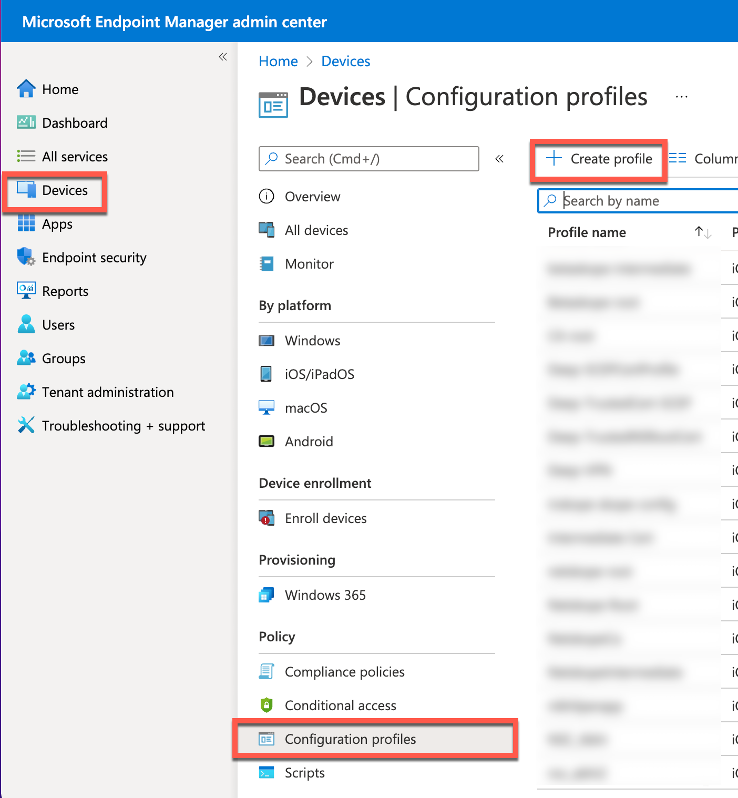
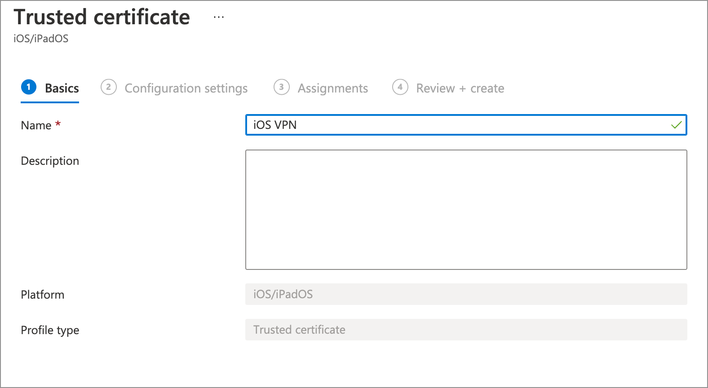
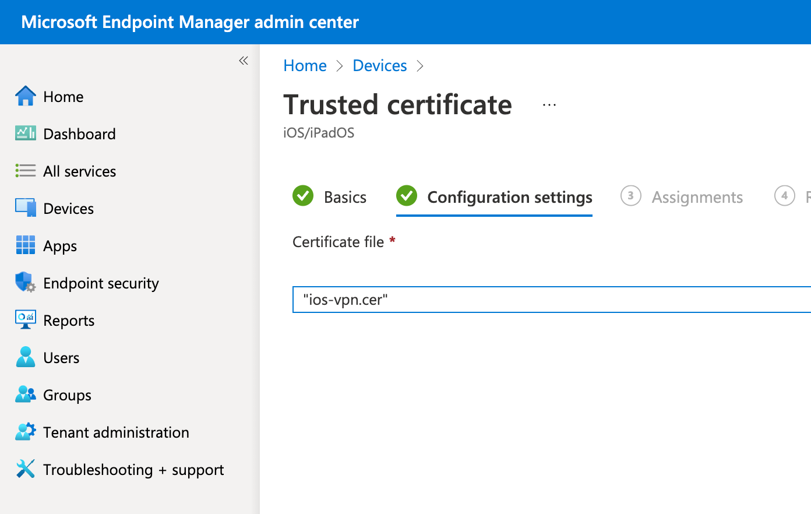
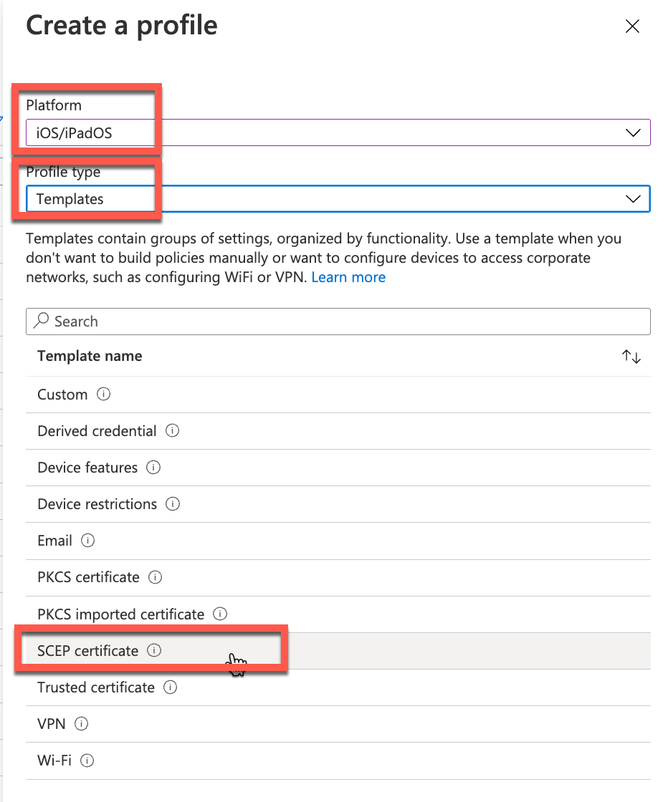
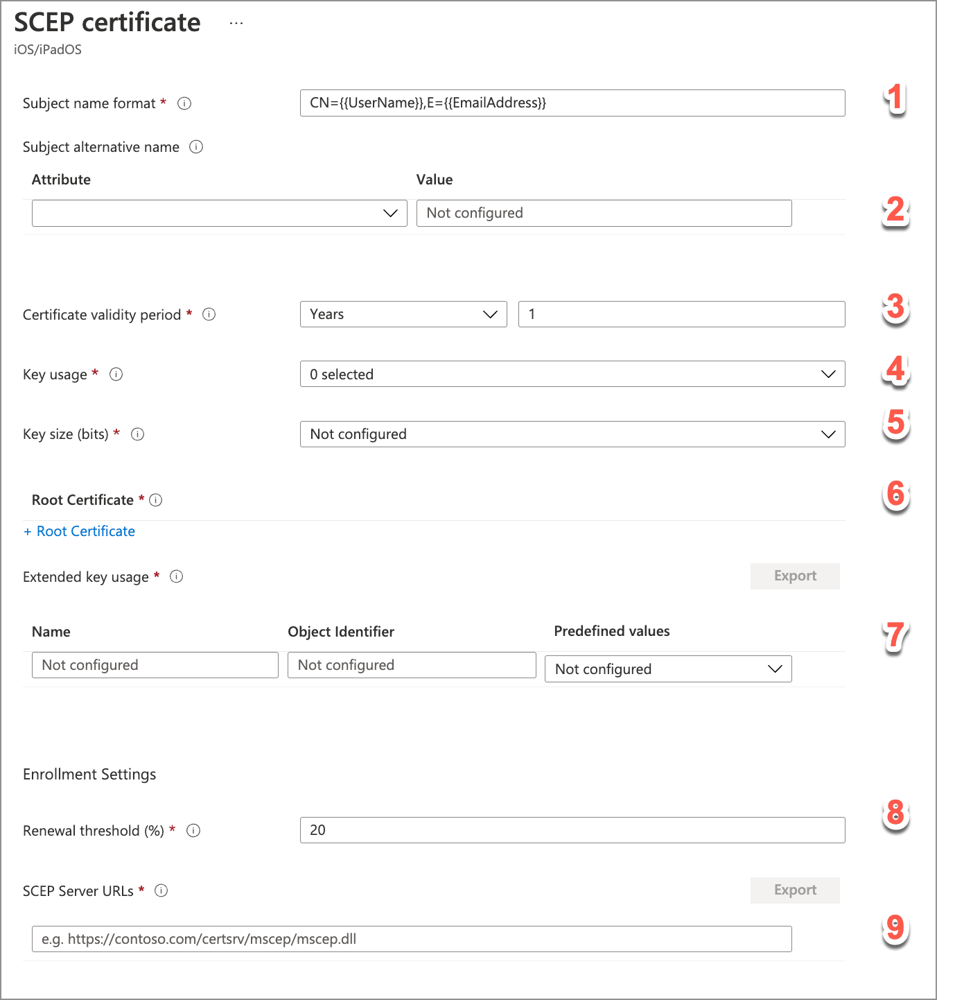

Create Certificate Profiles for Intune
To configure Intune, you need to create a trusted certificate profile, a SCEP certificate profile, and a trusted Netskope certificate profile.
Create a Trusted Certificate Profile
Create a Trusted Certificate profile before creating the SCEP or .PFX certificate profile.
You will need your SCEP server certificate to complete these steps.
To create a trusted certificate profile:
Log in to the Microsoft Endpoint Manager (MEM) using your admin account.
In the MEM console, go to Devices > Configuration Profiles and click Create Profile.
You need to create a Trusted certificate profile before you can create a SCEP or Netskope certificate profile. Select these parameters:
Platform:
iOS.Profile type:
Trusted certificate.

Enter and select these parameters:
In the Basics tab, provide a name for the profile. Click Next to continue
In the Configuration Settings tab, upload the .cer file.
In the Assignment tab, you can select your target audience (groups, users, or all devices) to push the configuration profiles.
In the Review + create tab, verify your profile settings and click the Create button.
Create a SCEP Certificate Profile
After creating a Trusted CA certificate profile, create a SCEP certificate profile. When you create a SCEP certificate profile, you must specify a Trusted certificate profile for it. This associates the two profiles that you must deploy separately.
You need to copy the Tenant OU and Organization Name values from the Netskope UI. To get the values, go to Settings > > Netskope Client > MDM Distribution. You also need to know your SCEP server URL to complete these steps.
To create a SCEP certificate profile:
Click Profile > Create Profile. Enter and select these parameters:
Name: Enter a unique name.
Platform:
iOS.Profile type:
SCEP certificate.
Click Create to continue.
In the SCEP Certificate panel, do the following:
In the Basics tab, provide a name and click Next.
In the Configurations tab, enter the following:
1. Subject Name Format:
Customand then enter this in the Custom text field:CN={{EmailAddress}},E={{EmailAddress}},OU= <Tenant OU from Netskope UI>,O= <CompanyName>.2. Subject Alternate Name: Select both
Email AddressandUser Principal Name (UPN).3. Certificate Validity Period: Select how long to keep the certificate valid.
4. Key Usage: Select both
Digital SignatureandKey Encipherment.5. Key Size:
2048.6. Root Certificate: Click Select a Certificate and then in the Root Certificate panel, select the Trusted Certificate profile created previously. When finished, click OK.
7. Extended Key Usage: Select Client Authentication from the Predefined Values dropdown list which will populate the Name and Object Identifier fields.
8. Renewal Threshold: Leave the default value (recommended) or enter a new one.
9. SCEP Server URLs: Enter your SCEP server URL. For example:
http://<fqdn>/certsrv/mscep/mscep.dll
In the Assignment tab, select the target audience for this iOS profile deployment.
In the Review + Create tab, verify your settings and click Create .
Create a Trusted Netskope Root Certificate Profile
After creating a SCEP certificate profile, create a Trusted Root certificate profile for Netskope.
You need to download the Netskope Root certificate from the Netskope UI to complete these steps. To get the certificate, go to Settings > > Netskope Client > MDM Distribution .
Important
The Netskope Root certificate is in .pem format. You will need to convert it to .cer or .crt format before importing it. Rename the file to convert from .pem to .cer format.
To create a trusted Netskope certificate profile:
Click Profile > Create Profile. Enter and select these parameters:
Name: Enter a unique name.
Platform:
iOS.Profile type:
Trusted certificate.
In the Trusted Certificate panel, provide a name in the Basics tab and click Next.
In the Configurations settings tab, upload the Netskope Root certificate.
Review your settings, and click Create.
Upload Certificates to Netskope
The Root CA and any intermediate CA certificates used for certificates have to be uploaded to Netskope so the Netskope VPN infrastructure can validate certificates from devices.
Retrieve root and intermediate CA certificates from the SCEP server and upload them in the Netskope UI in PEM format. Copy the intermediate certificate first, and the root certificate last, into one file.
To upload your complete certificate chain used to validate mobile devices:
Go to Settings > > Netskope Client > MDM Distribution, and then scroll down the page until you see the Upload Certificate to Netskope section.
Click Upload/Replace Certificate, and then click Select Certificate to locate and select your certificate file.
When finished, click Upload.
When the Preview message box opens, click Save.